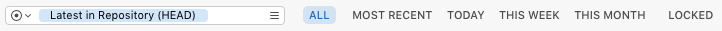

The filter bar allows you to quickly apply commonly-used filters to the contents of the browser. You can also specify the revision to browse as well as filter the contents of the browser by name, author or revision.

Use the revision field to specify the revision displayed in the browser.
By default, the repository browser displays the HEAD revision, i.e. the latest in the repository. As a result, changes made to the repository with the browser (such as copying or deleting items) will immediately be reflected in the view.
Alternatively, you can browse the contents of an older revision by entering the date or number of the revision into this field. This can be useful for finding older or deleted files for export or resurrection.
It is not possible to modify existing revisions in a Subversion repository. Instead, it’s only possible to affect changes by adding a new revision.
As a result, many browser functions are not available when browsing a specific revision. For example, it is not possible to move or rename an item in an existing revision.
Some functions however—such as Copy To, New Folder and Import—are still available. Be aware that while these functions will result in the addition of a new revision.
Therefore such changes in the repository will not be shown until the browser is reverted to display Latest in Repository (HEAD).
Shows all the files in the browser.
The browser’s pre-filtered expansion status is restored. Use the Show File in All function on the browser’s right-click menu to remove the filter and reveal the current selection.
Clicking the All button does not reset the text in the filter’s search field. Use the View > Show All (key equivalent ⌘\) function to do this.
Shows only files and folders that were committed to the repository in the most recent revision.
This filter is replaced by This Revision ^R when a revision other than Latest in Repository (HEAD) is specified in the revision field, in which case enabling the filter results in only those items being shown that were modified in the given revision.
Shows only files and folders that have been modified today.
Shows only files and folders that have been modified during the current calendar week.
Shows only files and folders that have been modified during the current calendar month.
Shows only files that are locked. This filter can be combined with Today, This Week and This Month.
Cornerstone only applies the filter to the items currently displayed in the browser. For performance reasons it does not query the repository for all items which match the current filter criteria.
The search text box can be used to search for matching file (or folder) names as well as authors and revisions in the items that match the current filter.
The search field’s text is reset by View > Show All (key equivalent ⌘\).
The search field automatically applies the filter a short period after the last keystroke. Pressing the Return ⏎ key while in the search field will result in the filter text being stored for quick access from the field’s drop-down menu.